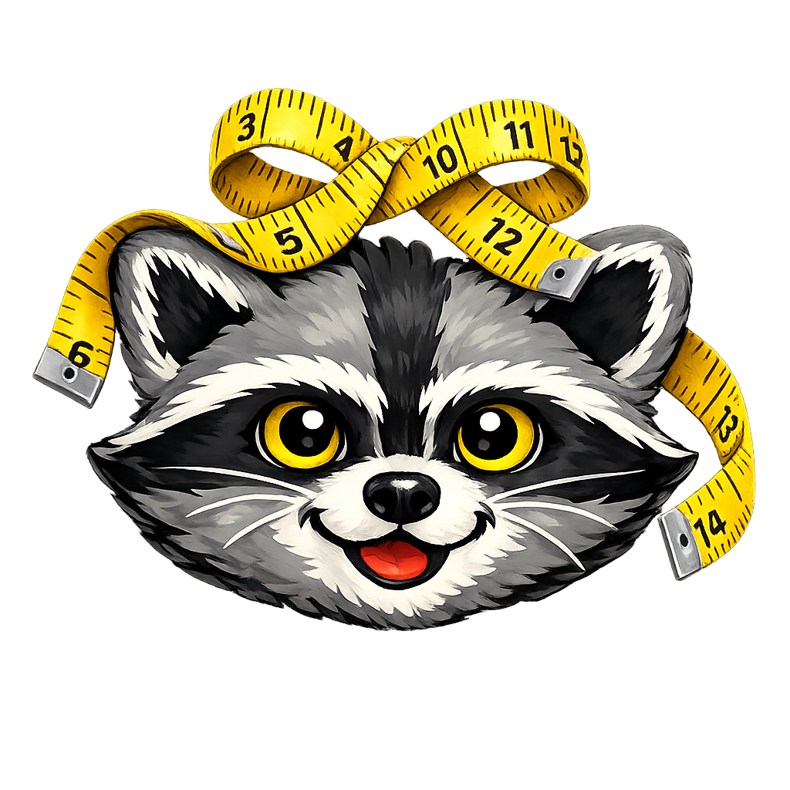

River's Closet Boutique

Looking for a new look this season? I have some fashion tips for you!
Turn trash into treasure and embrace your inner raccoon - curious, crafty, and utterly unique!

Looking for a new look this season? I have some fashion tips for you!